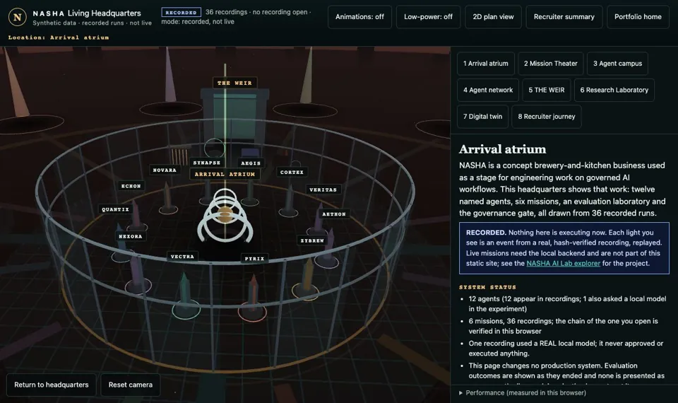

NASHA · governed intelligence
Enter the headquarters.
Explore twelve specialists, recorded missions and the business operations center.
Preview screenshot. Interactive 3D starts when you enter. Navigation, recorded evidence and character views work without starting it.